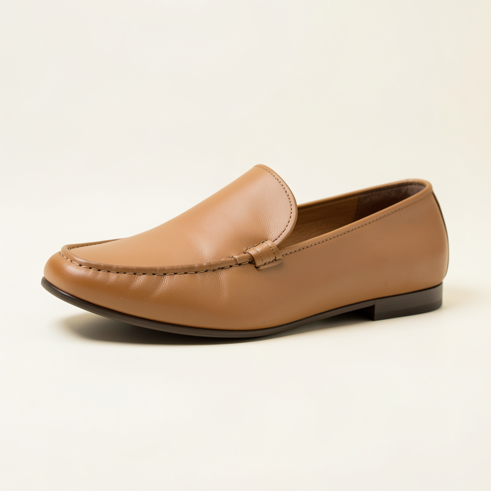

Five-point scales: 1: Unacceptable: major defects; 2: Poor: substantial revision needed; 3: Adequate: some revision needed; 4: Good: minor revision needed; 5: Excellent: ready for intended brief.
Rate adherence against the brief and mandatory criteria; coherence against structure and artefacts; composition against visual balance; usability against suitability for the campaign. No ratings are prefilled. Usable: 1 means acceptable as a promotional concept, 0 means unacceptable. Keep rater identity consistent. The primary concept decision requires unanimous nonblank usable votes per image (one rater counts). Disagreement remains missing pending documented human adjudication; it is never converted to a failure or half a usable image. Mean reviewer votes are supplementary. This worksheet does not imply clearance for commercial publication.
1. image_2514ee174241bd26
Studio photograph of one plain tan leather loafer on an ivory background, three-quarter view, soft side lighting, no lettering.
Mandatory criteria: one tan loafer; ivory background; no lettering

Record ratings in ratings.csv; usable is a separate 0/1 decision.